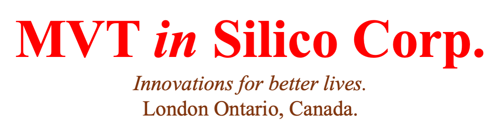

This website adopts a KISS (keep it simple and straightforward) principle.

MVT in Silico Corp.
Strap line.
We are MVT in Silico (MVTIS) who deploy fundamental scientific principles to build effective medical treatments & research
solutions.
Public pitch deck. (June 2025).
You can find out our public pitch here.
About Us.
MVTIS is a life sciences innovation company that presently provides CM&S services for the life sciences.
We provide evidence for products that our clients wish to patent. We encompass a wide range of capabilities from
molecular dynamics to whole body blood flow circulation. In addition,
we have internal pipelines to develop our own products that include software as medical devices (SAMD), a novel pharma hit identification
pipeline, and three physics medical devices.
The Challenge.
There is a high failure rate in pharma and MedTech R&D from discovery stage to market.
A major reason for this is our lack of understanding of the system that the treatment is intended to treat.
The Solution.
We use computer modelling & simulation to understand the system that the treatment is intended to treat.
To do so, we have developed our proprietary software called "MVT Software Suite." that has modules that are
capable of simulating the system from the molecular level to the whole body level to digital clinical trials.
Vision.
To reduce the world's burden of critical illness through a computer modelling & simulation (CM&S) first approach,
and become a life sciences manufacturer.
Sectors we serve.
Hypertension, obesity, and aging.
FemTech.
Drug delivery systems.
Biophysical and physiological evidence generation for regulatory approval.
Services & products.
Our services and products are for collaborations and internal pipelines.
CAD modelling.
FEA analysis.
CFD simulations.
Genetics.
Molecular simulations.
Bespoke biophysical computer models.
Non animal models: lab on a chip (microfluidic devices).
Original and curated+annotated data repositories.
How it works.
We have a few user uptake meetings, followed by design of the project. The projects are typically 2 to 14
months and our pricing is at an hourly rate. An NDA and other relevant agreements to protect all parties are executed early in the process. Upon agreement by all parties,
we perform the project with regular reporting and agile management. We provide a report (and all other agreed material)
at the end of the project which contains information (diagrams, text, tables, designs, computer files) for inclusion
into your evidence dossier. The IP is yours, unless we agree otherwise. As a core value, we maintain professional
integrity and confidentiality.
Partners & Funders.
As of January 2025, we are working with three companies and two university research groups.
We are funded by an initial founder's investment and government grants. Recently, we received
grants from BioTalent Canada and BioHubNet for which we are grateful.
The Team.
We are an expert team consisting of computational modellers, biophysicists, pharmacologists, mechanical engineers, and university
professors. In addition, the company has two employees as of 2025.
Dr. S. R. Kharche. President, CEO, and Chief Science Officer. (founder)
Dr. Kharche is a seasoned scientist and an expert in scientific computing. His expertise includes R&D software development,
computational physiology, cardiovascular sciences, blood flow fluid dynamics, and molecular dynamics. He has published a wide spectrum of journal
articles which
has led to the inception of MVT in Silico company. Over the past two years (2023 to 2025), he has gained valuable
hands on experience of the business ecosystem in Canada and elsewhere. He is an ideal founder to lead the Company in its
scientific and technical programs.
Founder's resumes: short and long.
Prof. D. G. Welsh. Pharmacology expert advisor.
Dr. Donald G. Welsh. Chief Advisor.
Dr. (Prof) Donald G. Welsh is a world renowned Professor of Physiology and Pharmacology at Western University, Canada,
and a distinguished scientist at the Robarts Research Institute. A leading expert in vascular biology and ion
channel physiology, his research focuses on the regulation of blood flow, arterial function, and the role of
potassium channels in cardiovascular health. With over 100 high quality peer reviewed scientific publications,
his work has garnered more than 6,000 citations, reflecting its broad impact. His leadership extends to
editorial roles for prestigious journals and advisory positions for international scientific organizations.
Recognized with awards for his contributions to vascular physiology, he bridges foundational research and clinical
innovation. Dr. Welsh’s lab is renowned for pioneering discoveries in cellular communication within microvascular
networks. He is the ideal advisor for our life sciences and biotech programs leading us towards patents.
Prof. Welsh’s brief resume can be found here.
Company employees are:
Yihang Cheng. R & D officer.
Harpreet Kaur. Business Manager.
Others.
We are currently seeking 2 co-founders, 4 directors, 3 advisors, and employees.
Contact.
Phone: 5198780685
Email: sumus@mvtinsilico.ca
Address: London, Ontario, N6K 2H8.
LinkedIn: MVT in Silico's LinkedIn.
2025 Opportunities.
New opportunities will be posted here.
Newsletter.
Terms of Use and Privacy Policy.
MVT in Silico Corp (MVTIS) is the sole owner of the contents of this website. The only way this website
collects your information is when you give it to us voluntarily, say using the email address above.
We do not share, disclose, sell, or trade your information with anyone. As a company, we may add you to our informative
mailing lists used for monthly newsletters and occassional announcements.
In case we provide links to other websites, we are not responsible for their content and policies.
This website attempts to minimize use of web cache and cookies and minimizes your (and our) internet related risks.
We do not use web analytics. We do not use social media plugins. We do not use third party advertising.
MVTIS embraces the Canadian federal Personal Information Protection and Electronic Documents Act
(PIPEDA 2009) and acknowledge the importance of national standards that are designed to protect the personal
information that we collect. As such, the company's CEO is responsible for all personal information that is
held, received, and deployed. Personal information that is not otherwise required is destroyed and erased
from our paper and electronic records.
Copyright. © . February 2025. MVT in Silico Corp. All rights reserved.